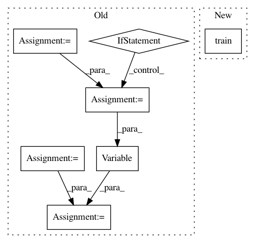

b87368e1e7fd832b505db9cc08015ac7af8f95de,VAE/main.py,,train,#Any#,94
Before Change
def train(epoch):
batch_data_t = torch.FloatTensor(BATCH_SIZE, 784)
if cuda:
batch_data_t = batch_data_t.cuda()
batch_data = Variable(batch_data_t, requires_grad=False)
for i in range(0, training_data.size(0), BATCH_SIZE):
optimizer.zero_grad()
batch_data.data[:] = training_data[i:i + BATCH_SIZE]
recon_batch_data, mu, logvar = model(batch_data)
loss = loss_function(recon_batch_data, batch_data, mu, logvar)
loss.backward()
loss = loss.data[0]
optimizer.step()
if i % 10 == 0:
print("Epoch: {} [{}/{} ({:.0f}%)]\tLoss: {:.4f}".format(
epoch,
After Change
def train(epoch):
model.train()
train_loss = 0
for batch in train_loader:
batch = Variable(batch)
In pattern: SUPERPATTERN
Frequency: 3
Non-data size: 7
Instances
Project Name: pytorch/examples
Commit Name: b87368e1e7fd832b505db9cc08015ac7af8f95de
Time: 2016-12-23
Author: jvanamersfoort@twitter.com
File Name: VAE/main.py
Class Name:
Method Name: train
Project Name: maciejkula/spotlight
Commit Name: aa1eb21d82804500e2357cde21b18bcf6f87825a
Time: 2017-08-02
Author: maciej.kula@gmail.com
File Name: spotlight/factorization/implicit.py
Class Name: ImplicitFactorizationModel
Method Name: predict